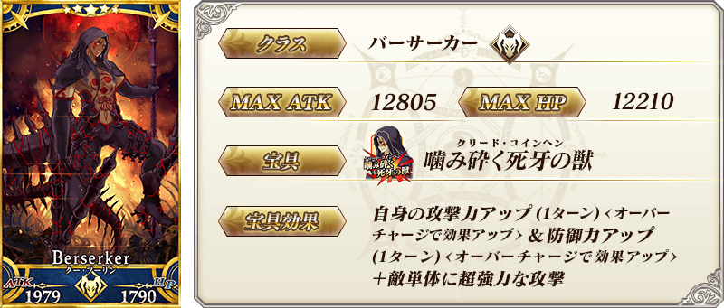
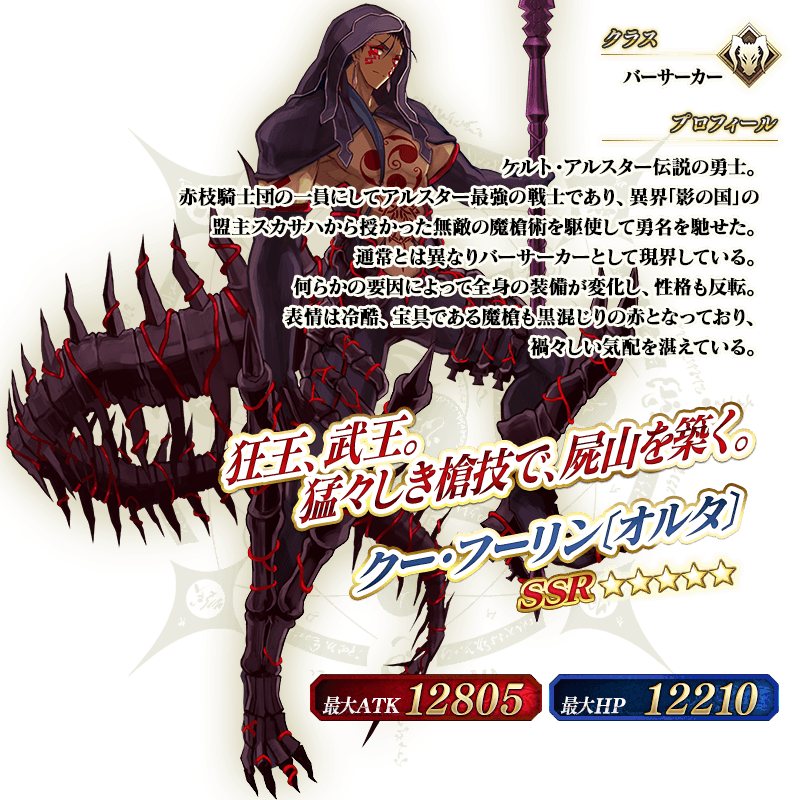
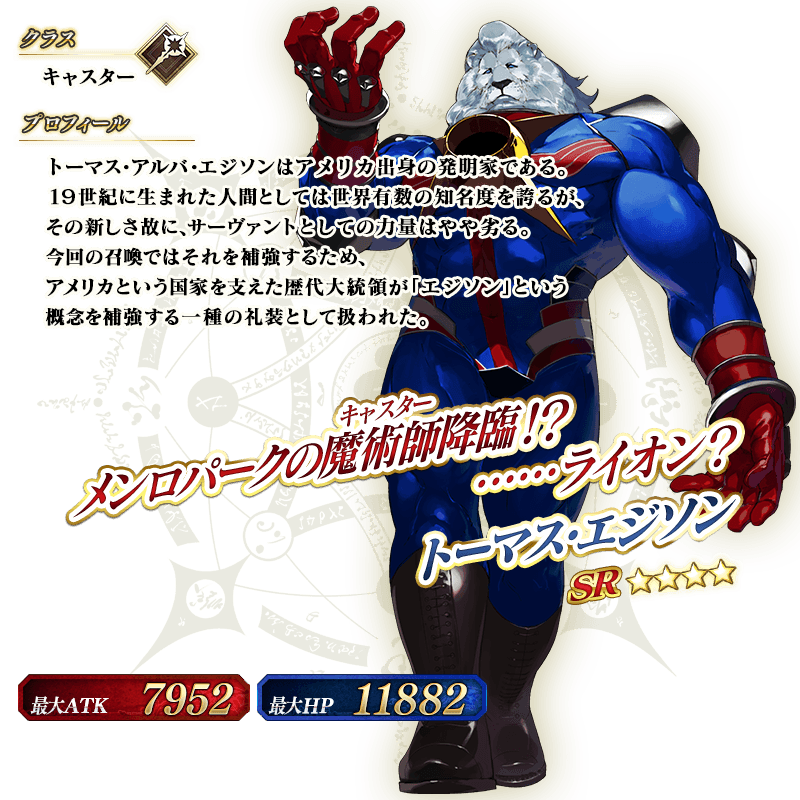

◆「合眾為一Pick Up3召喚」期間◆
期間：2016年5月18日(三)16:00～5月25日(三)12:59
期間限定舉辦「合眾為一Pick Up3召喚」！
※未到達第五特異點的狀態也能進行合眾為一Pick Up3召喚。
從在「第五特異點 北美神話大戰 合眾為一」活躍的Servant中，這次是「★5（SSR）庫・夫林〔Alter〕」 「★4（SR）湯瑪斯･愛迪生」Pick Up！
Pick Up期間中，Pick Up Servant的出現機率UP！
10次召喚★4(SR)以上1張確定和★3(R)以上的Servant1位確定！
※★4(SR)以上確定包含Servant和概念禮裝。
※所謂「出現機率UP」意指比同稀有度的Servant及概念禮裝出現機率更高的設定。



